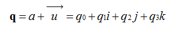
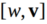
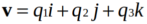
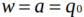
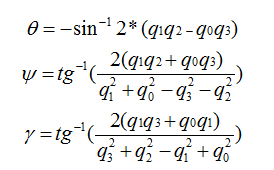

四軸的姿態解算無疑是最繁瑣的步驟沒有之一，但是自從MPU6050出現了硬件DMP的時候，大媽都能完成姿態解算了！
CrazePony使用了MPU6050自帶的硬件四元數單元，可以通過IIC直接讀取四元數，省卻了軟件解算繁瑣的算法步驟，非常方便易用。
這裡還是要首先介紹下四元數，四元數要說的實在太多，因為它的優點很多，利用起來很方便，但是理解起來就有點蹩腳了。我們百度四元數，一開始看到的就是四元數來歷，還有就是四元數的基本計算。對於來歷，還是想說一下，四元數（Quaternions）是由威廉·盧雲·哈密爾頓(William RowanHamilton,1805-1865）在1843 年愛爾蘭發現的數學概念。
將實數域擴充到複數域，並用複數來表示平面向量，用複數的加、乘運算表示平面向量的合成、伸縮和旋，這就是我們熟知的複數的二維空間含義，所以人們會繼續猜想，利用三維複數不就可以表達三維空間的變換了嗎，歷史上有很多數學家試圖尋找過三維的複數，但後來證明這樣的三維複數是不存在的。有關這個結論的證明，我沒有查到更明確的版本，據《古今數學思想》中的一個理由，三維空間中的伸縮旋轉變換需要四個變量來決定：兩個變量決定軸的方向，一個變量決定旋轉角度，一個變量決定伸縮比例。這樣，只有三個變量的三維複數無法滿足這樣的要求。但是歷史上得到的應該是比這個更強的結論，即使不考慮空間旋轉，只從代數角度來說，三維的複數域作為普通複數域的擴張域是不存在的。並且，據《古今數學思想》敘述，即使像哈密爾頓後來引入四元數那樣，犧牲乘法交換律，這樣的三維複數也得不到。經過一些年的努力之後， Hamilton 發現自己被迫應作兩個讓步，第一個是他的新數包含四個分量，而第二個是他必須犧牲乘法交換律。（ 《古今數學思想》第三冊177 頁）但是四元數用作旋轉的作用明顯，簡化了運算，而且避免了Gimbal Lock，四元數是最簡單的超複數，我們不能把四元數簡單的理解為3D 空間的矢量，它是4 維空間中的的矢量，也是非常不容易想像的。
我們知道在平面(x,y)中的旋轉可以用複數來表示，同樣的三維中的旋轉可以用單位四元數來描述。我們來定義一個四元數：

我們可以把它寫成，其中，。那麼V是矢量，表示三維空間中的旋轉軸。w是標量，表示旋轉角度。那麼就是繞軸V旋轉w度，所以一個四元數可以表示一個完整的旋轉。只有單位四元數才可以表示旋轉，至於為什麼，因為這就是四元數表示旋轉的約束條件。
所以大家可以理解為，單位四元數能夠表示旋轉。我們給出一組單位四元數和歐拉角的轉換關係，通過這個關係來將採集到的四元數轉化成歐拉角，原理將在軟件解算中給出，這裡直接使用就可以了：

所以在四軸飛行器中，傳感器讀取到四元數，首先應先將它歸一化成單位四元數：
norm = dmpinvSqrt(q[0]*q[0] + q[1]*q[1] + q[2]*q[2] + q[3]*q[3]);
q[0] = q[0] * norm;
q[1] = q[1] * norm;
q[2] = q[2] * norm;
q[3] = q[3] * norm;
歸一化後根據四元數和歐拉角轉換公式把四元數轉化為歐拉角，OK,硬件姿態解算完成！
DMP_DATA.dmp_roll = (atan2(2.0*(q[0]*q[1] + q[2]*q[3]), 1 - 2.0*(q[1]*q[1] + q[2]*q[2])))* 180/M_PI;
// we let safe_asin() handle the singularities near 90/-90 in pitch
DMP_DATA.dmp_pitch = dmpsafe_asin(2.0*(q[0]*q[2] - q[3]*q[1]))* 180/M_PI;
DMP_DATA.dmp_yaw = -atan2(2.0*(q[0]*q[3] + q[1]*q[2]), 1 - 2.0*(q[2]*q[2] + q[3]*q[3]))* 180/M_PI;